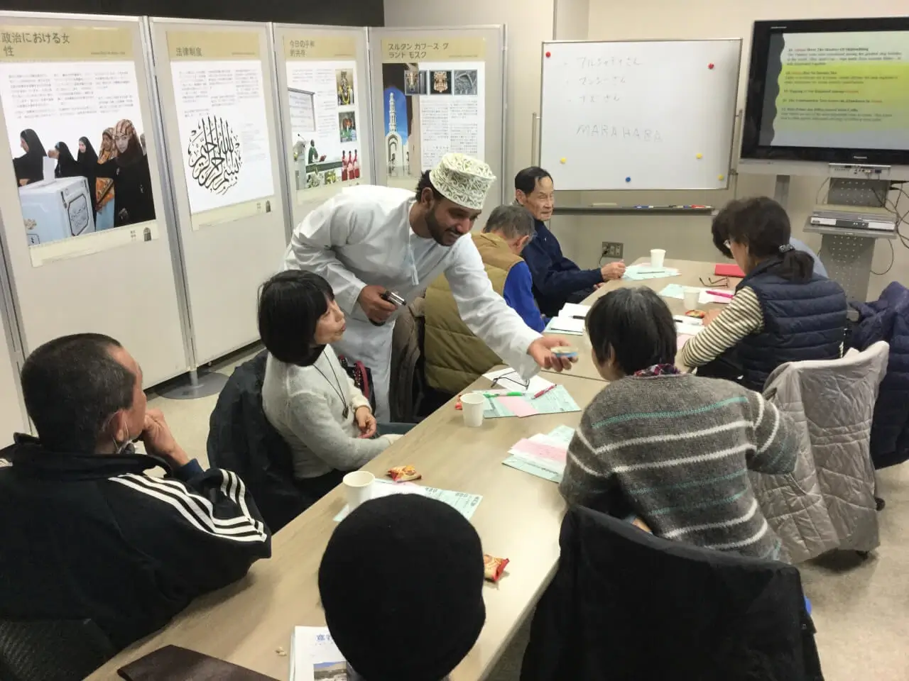

Tokai University, Tokyo, Japan 2017

January 16 through January 19, 2017.
The exhibition was hosted by the Tokai University Office of International Affairs.
寛容・理解・共存”
をキーワードに、オマーンの伝統や文化、古代
文明遺産の保護において同国が果たしている役割など
Tokai University is one of the largest general education and research institutions in Japan. Today, consisting of eight campuses, with 21 schools and faculties made up of 80 departments, majors, and programs. There are more than 30,000 students at Tokai university, including 700 international students.
Tokai University is a private university established by Dr. Shigeyoshi Matsumae in 1942. “Tokai" refers to the sea to the east of Asia, namely the Pacific Ocean, and symbolizes the desire to foster a rich spirit and broad perspectives. The founding spirit and objectives of Tokai University are to contribute to human society, to foster active, talented people and to arouse interest in our earth and a sense of responsibility for the future of mankind. Since its establishment, Tokai University has prioritized its curriculum on Modern Civilization, based on its belief that a university should not only provide knowledge and technology, but also be a place where the richness of humanity and creativity in each individual is cultivated.
Tokai University maintains academic exchange agreements with more than 100 universities and organizations in 35 countries.
A quote from the official greeting of the Dr. Eng. Tatsuro Matsumae, President of the Tokai University Educational System:
“What is our mission for this era? The era during which people drew their values solely from religion or ideology is now over. We are at a turning point in history. We are entering a chaotic new century where values worldwide are diverse and complex. We must learn to appreciate those qualities valued by others and find ways to live together without posing threats to others. With this in mind, we can form new relationships between nations, between people, and between humanity and the rest of the environment. … We know that conflict can be reduced, if not eliminated, by the development of better relationships between individuals and among the nations of the world. Tokai University Educational System has a vision of a new civilization where individuals and societies can live together peacefully, and our species lives in harmony with the environment. Our mission is to turn that vision into a reality.”
A quote from Kiyoshi Yamada, Tokai University Chancellor:
“Through the exercise of interacting with a diverse range of people, engaging in idea exchanges with their peers, and completing their projects together, students are able to develop the necessary skills and tools to make it through today's society. The Center's goal is to develop within the students the ability to think independently, the ability to cooperate with others, the ability to tackle challenges, and the ability to accomplish goals. In this way, the Center has been nurturing people who can embark on new challenges without being limited by pre-existing notions and concepts.”
In addition to the exhibition, a workshop was held on January 21, 2017 regarding life and culture in Oman, with a presentation of an Omani student, Mr. Amjad Nassar Al Jadidi, enrolled in the Graduate School of Economics (Master’s Program).
Please visit our Virtual Global Exhibition in your preferred language